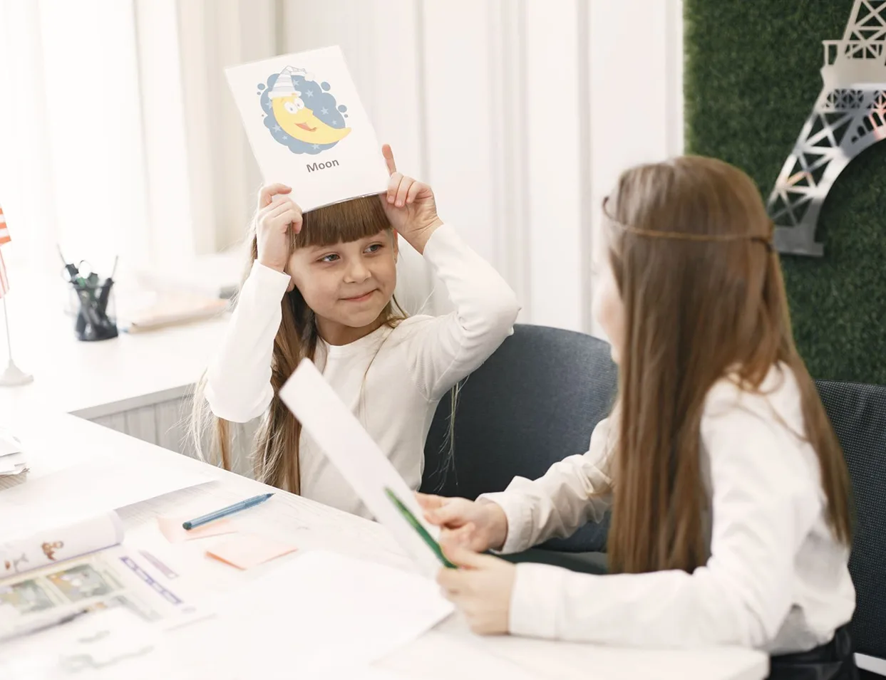
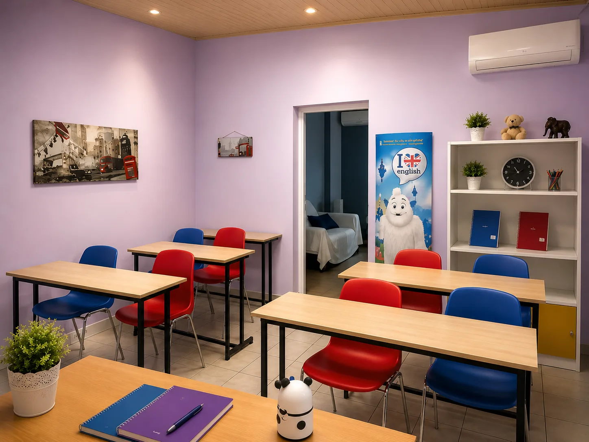
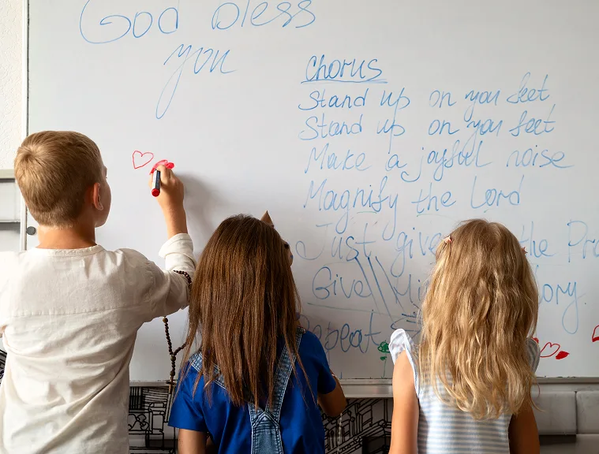

Χτίζοντας γερές βάσεις στα αγγλικά από το 1988. Building strong English foundations since 1988.
Με περισσότερα από 35 χρόνια εμπειρίας, βοηθάμε κάθε μαθητή να εξελίσσεται με αυτοπεποίθηση, συνέπεια και προσωπική καθοδήγηση. With over 35 years of experience, we help every student grow with confidence, consistency and personal guidance.

Το Φροντιστήριό μαςAbout Us
Μια ιστορία που συνεχίζεται καθημερινά. A story that continues every day.
Για περισσότερες από τρεις δεκαετίες, η διδασκαλία της αγγλικής γλώσσας αποτελεί μέρος της καθημερινότητάς μας. Μέσα από ολιγομελή τμήματα και προσωπική καθοδήγηση, έχουμε σταθεί δίπλα σε εκατοντάδες μαθητές, παρακολουθώντας την πορεία τους από τα πρώτα τους βήματα στα Αγγλικά μέχρι την επίτευξη των στόχων τους. For more than three decades, teaching the English language has been part of our everyday life. Through small groups and personal guidance, we have stood by hundreds of students, watching their journey from their first steps in English all the way to achieving their goals.
Γιατί εμάςWhy Choose Us
Αξιοποιώντας τη γνώση και την εμπειρία. Putting knowledge and experience to work.
Όλοι οι μαθητές και οι γονείς που μας έχουν δείξει εμπιστοσύνη όλα αυτά τα χρόνια, γνωρίζουν τα σημαντικά πλεονεκτήματα της φοίτησης στο φροντιστήριό μας. Every student and parent who has trusted us over the years knows the real advantages of studying with us.

01Ολιγομελή ΤμήματαSmall Classes
Πιστεύουμε ότι τα μικρά τμήματα συμβάλλουν ουσιαστικά στην καλύτερη επικοινωνία μεταξύ μαθητή και καθηγητή, επιτρέποντας πιο εξατομικευμένη καθοδήγηση και ενεργή συμμετοχή στο μάθημα.We believe small groups make a real difference to communication between student and teacher, allowing more personalised guidance and active participation in class.
02
Αποδεδειγμένη ΕπιτυχίαProven Success
Η πολυετής εμπειρία μας και η συστηματική προετοιμασία των μαθητών μας έχουν οδηγήσει σε υψηλά ποσοστά επιτυχίας στις εξετάσεις πιστοποίησης της αγγλικής γλώσσας.Our years of experience and systematic preparation have led to high pass rates in English language certification exams.
03
Προσιτές ΤιμέςAffordable Fees
Προσπαθούμε να διατηρούμε τα δίδακτρα σε λογικά επίπεδα, προσφέροντας ποιοτική εκπαίδευση και ουσιαστική υποστήριξη χωρίς περιττές επιβαρύνσεις για τις οικογένειες.We keep our fees at reasonable levels, offering quality education and meaningful support without unnecessary costs for families.
04
Προσωπική ΔιδασκαλίαPersonal Teaching
Τα μαθήματα πραγματοποιούνται από την Αναστασία Παναγοπούλου, πτυχιούχο Αγγλικής Φιλολογίας, καθώς και από έμπειρους και πιστοποιημένους συνεργάτες, με έμφαση στη συνέπεια και την ποιότητα της διδασκαλίας.Classes are taught by Anastasia Panagopoulou, a graduate in English Literature, along with experienced certified associates, with an emphasis on consistency and quality.
ΤμήματαCourses
Μαθαίνουμε μαζί, βήμα βήμα A path for every age
Από τις πρώτες τάξεις έως τις πιστοποιήσεις Αγγλικών.From first steps in primary school to certificates and English for work.
Οι αξιολογήσεις μαςOur reviews
Τι λένε για εμάς γονείς & μαθητές What parents & students say about us


ΆρθραBlog
Νέα, Άρθρα & Συμβουλές News, Articles & Tips
Ενημερώσεις από το φροντιστήριο, χρήσιμα άρθρα και θέματα γύρω από την εκμάθηση της αγγλικής γλώσσας.Updates from the school, useful articles and topics around learning English.


Συχνές ερωτήσειςFAQ
Ό,τι θέλετε να ρωτήσετε Anything you want to ask
Τα περισσότερα παιδιά ξεκινούν στην Α' ή Β' Δημοτικού, αλλά σχεδιάζουμε πρόγραμμα για κάθε ηλικία και επίπεδο. Μια δωρεάν αξιολόγηση μάς βοηθά να βρούμε το ιδανικό σημείο εκκίνησης.Most children start in the first or second grade of primary school, but we design a plan for every age and level. A free assessment helps us find the ideal starting point.
Τα τμήματά μας έχουν έως 8 μαθητές. Έτσι εξασφαλίζουμε προσοχή, συμμετοχή και πρόοδο για τον καθένα ξεχωριστά.Our classes have up to 8 students. This ensures attention, participation and progress for each individual.
Ναι. Προετοιμάζουμε για όλα τα αναγνωρισμένα πτυχία, Cambridge B2 First & C2 Proficiency, Michigan ECCE & ECPE και άλλα, με υψηλά ποσοστά επιτυχίας.Yes. We prepare for all recognised certificates, Cambridge B2 First & C2 Proficiency, Michigan ECCE & ECPE and more, with high success rates.
Φυσικά! Επικοινωνήστε μαζί μας και θα κανονίσουμε μια φιλική, δωρεάν συνάντηση γνωριμίας και αξιολόγησης επιπέδου.Of course! Contact us and we will arrange a friendly, free meeting and level assessment.
ΕπικοινωνίαGet in touch
Που θα μας βρείτε Where to find us
Βρισκόμαστε στο Κορωπί, πλησίον της Εκκλησίας της Ανάληψης. Επικοινωνήστε μαζί μας ή επισκεφθείτε τον χώρο μας για να γνωριστούμε και να συζητήσουμε πώς μπορούμε να σας βοηθήσουμε να πετύχετε τους στόχους σας.We're located in Koropi, near the Church of the Ascension. Get in touch or visit us so we can meet and discuss how we can help you reach your goals.
Διεύθυνση
Address
D. Papanikolaou 12, 19400 Koropi, Attica, Greece